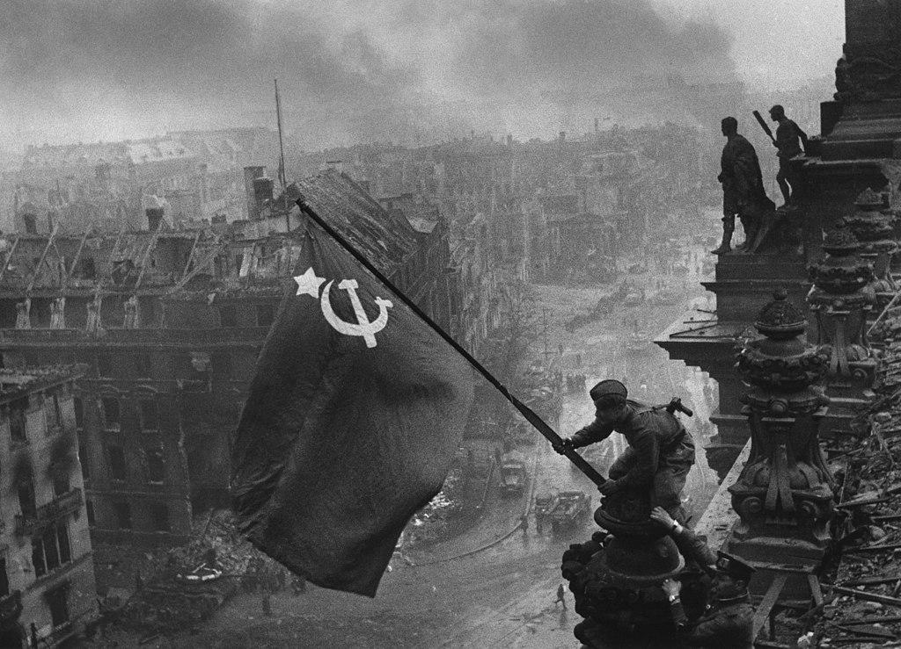
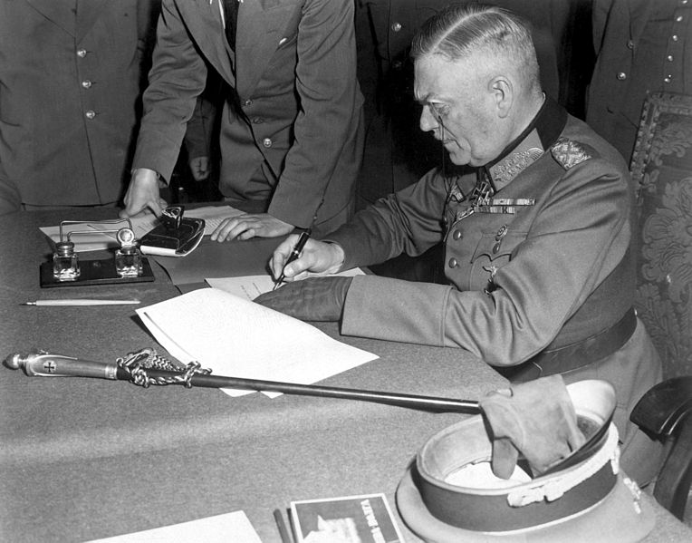
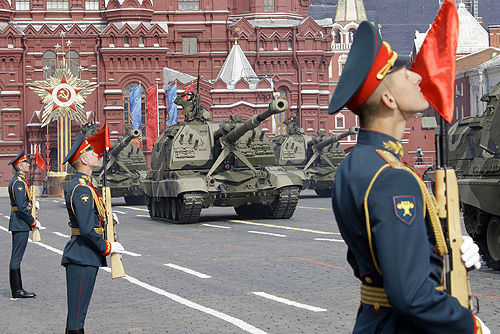

Интересные факты
| Предназначенный для водружения над Рейхстагом штурмовой флаг 150-й стрелковой дивизии 3-й ударной армии 1-го Белорусского фронта, ставший Знаменем Победы, был установлен на крыше 30 апреля в 22 часа по «берлинскому» времени, но 1 мая по московскому. Он стал четвертым по счету знаменем из установленных на крыше здания. Первые три были уничтожены в результате ночного дальнобойного немецкого артобстрела, в результате которого был разрушен стеклянный купол здания. Но вражеская артиллерия не смогла уничтожить закрепленное на восточной крыше знамя, водруженное Берестом, Егоровым и Кантарией. Символом победы стала фотография Евгения Халдея «Знамя победы над Рейхстагом». |  |
| Берлин был взят советскими войсками 2 мая 1945 года, но солдаты фашистской армии еще неделю оказывали сопротивление. Акт о капитуляции Третьего рейха, подписанный в Реймсе 7 мая 1945 года, не удовлетворил Сталина, и глава СССР распорядился, чтобы общую капитуляцию в Берлине от представителей видов вооруженных сил нацистов принял маршал Жуков. Окончательная капитуляция Германии была подписана 22:43 8 мая по среднеевропейскому времени, но в Москве на тот момент уже было 00:43 9 мая. |  |
| Мало кто знает, но на протяжении 20 лет 9 мая вообще не считался праздничным днем. В 1948 году руководство страны заявило, что надо забыть о войне и заниматься восстановлением государства. И только в 1965 году 9 мая как праздник возродил Брежнев. Тогда же был проведен второй парад Победы. Третий прошел к 40-летию Победы — в 1985 году, следующий — спустя еще 15 лет. После распада Советского Союза парады на 9 мая не проводились вплоть до 1995 года и лишь с этого года они стали постоянными. |  |